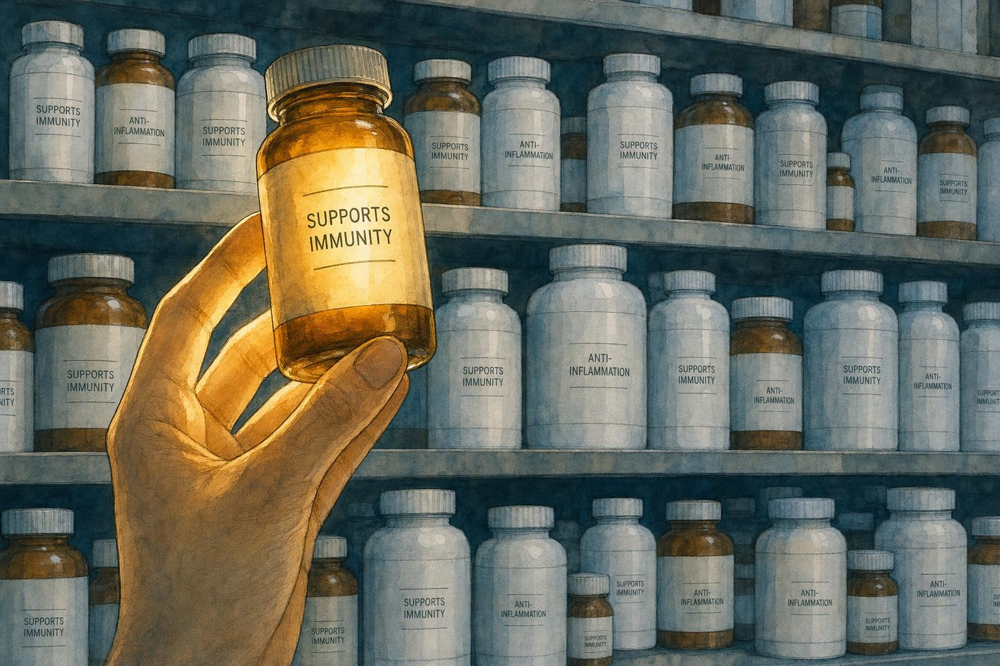
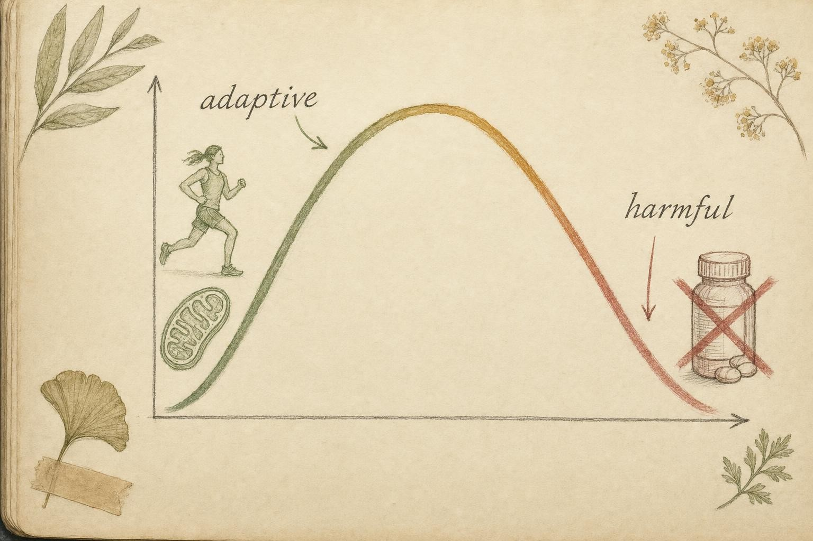

Grading the Hype: Evidence, Supplements, and the Whole System
The capstone: how to read a claim, find its evidence, grade it honestly, and know when to defer to a clinician.
Stand in the supplement aisle of any pharmacy and read the labels as if they were scientific claims , because that is exactly what they are pretending to be. "Supports immune health." "Fights inflammation." "Boosts your defenses." Each phrase gestures at a mechanism you now understand in detail: the innate sensors, the adaptive memory, the cytokine cascades, the resolution programs, the redox balance. And each phrase, carefully lawyered, stops just short of promising that the pill in the bottle will keep you from getting sick.
That gap , between a plausible pathway and a proven outcome , is the whole subject of this final chapter. Over nine chapters you learned how immunity and inflammation actually work. Now you turn that knowledge into a tool of discrimination: the ability to walk that aisle, or read that headline, or hear that podcast claim, and grade it. Not with cynicism, which rejects everything, and not with credulity, which accepts everything, but with a structured, transferable skill. By the end you should be able to say, of any immune or anti-inflammatory claim, exactly how good the evidence is, where it comes from, and when the honest answer is "ask your doctor."

The marketplace speaks in mechanisms it has not earned the right to promise." data-image-idx="0" style="display:block;max-width:100%;max-height:75vh;height:auto;width:auto;margin:0 auto;cursor:pointer;">Why mechanism is not benefit
Start with the single error that powers most of the hype: the assumption that if a substance does something to an immune pathway in a dish or a mouse, it will help a person. This is the leap from mechanism to benefit, and it is almost never justified on its own.
Consider why. A mechanism is a causal story about how a molecule interacts with biology , it inhibits a transcription factor, it scavenges a radical, it stimulates a receptor. Mechanisms are discovered in reductionist systems: cell cultures, isolated enzymes, knockout mice. These systems are deliberately stripped of complexity so the signal is visible. But a human being is not a stripped-down system. The molecule must survive digestion, be absorbed, reach the relevant tissue at a relevant concentration, act there without being counteracted by a dozen redundant pathways, and produce a change large enough to matter for something you actually care about , fewer colds, less pain, longer life. At every step, the effect can vanish.
Paul Calder's review of omega-3 fatty acids is the cleanest illustration of this in our field (Calder, 2013). The mechanisms are real and multiple: EPA and DHA inhibit NF-κB (the master pro-inflammatory transcription factor you met in Chapter 3), compete with arachidonic acid to yield less inflammatory eicosanoids, serve as substrates for the pro-resolving resolvins and protectins (Chapter 4), and signal through the GPR120 receptor. That is a textbook anti-inflammatory portfolio. Yet Calder is careful: the clinical trial evidence is genuinely positive in rheumatoid arthritis , supported by meta-analysis , but inconsistent in inflammatory bowel disease and asthma. Same molecules, same mechanisms, different diseases, different results. Mechanism told you where to look; it did not tell you what you would find.
This shrinkage between promise and payoff is not a quirk of immunology; it is close to the norm across biomedicine. Surveys of drug development in oncology and neurology have repeatedly found that only a small minority of compounds showing benefit in animal models go on to demonstrate benefit in human randomized controlled trials, and the attrition happens for reasons a supplement label never lists on its own. Mice metabolize many compounds differently than humans do. The doses that produce an effect in a small rodent, scaled up to human body weight, are sometimes larger than anyone could eat or absorb from a normal diet or a reasonably sized capsule. And laboratory mice are themselves immunologically unusual: raised in sterile or near-sterile housing, they lack the layered history of microbial exposure that shapes a normal adult immune repertoire, so their baseline immune state is not simply a small version of yours. None of this makes animal and cell-culture research worthless. It is indispensable for generating hypotheses and for explaining, after a trial reports its result, why the intervention worked or failed. It becomes worthless only when it is asked to do a job it cannot do on its own: stand in for the human outcome trial that was never run.
A second, related failure mode deserves a name here because you will meet it again in the grading framework below: the surrogate-outcome trap. Suppose a small trial reports that a supplement raised participants' salivary antibody levels or increased the killing activity of natural killer cells measured in a blood sample. Both changes can be real and statistically genuine. Neither one is a cold prevented, a hospitalization avoided, or a day of work not missed. A surrogate marker is only useful to the extent that it reliably tracks the outcome you actually care about, and that tracking can fail in surprising ways. The best known cautionary tale from outside immunology is hormone replacement therapy for postmenopausal women, which reliably improved cholesterol profiles, a plausible surrogate for heart disease risk, for more than a decade before large randomized trials found that the actual rate of heart attacks and strokes rose rather than fell on the therapy. Immunology has its own smaller versions of this trap. Whenever a claim leans on a marker rather than a lived outcome, ask directly: has anyone shown that moving this marker actually moves the thing you care about?
The structural version of this problem is regulatory, and Dwyer and colleagues lay it out plainly (Dwyer et al., 2018). In the United States, dietary supplements do not have to prove efficacy before sale , there is a pre-market approval gap. A drug must clear phase 2 and phase 3 efficacy trials on hard outcomes; a supplement need only be marketed with disclaimed "structure/function" claims. The consequence is that mechanistic plausibility, which should be the starting gun for expensive efficacy testing, instead becomes the finish line for marketing. Dwyer et al. argue the order must be restored: plausibility precedes, never substitutes for, trials on outcomes that matter.
The evidence hierarchy, rung by rung
Every study design sits on a ladder, and the rungs are ordered by one criterion: how well the design rules out explanations for a result other than the intervention itself. Climbing the ladder is not a snobbery exercise. It is a practical filter for the single hardest problem in evaluating any health claim, namely that humans who choose to do healthy things (take a supplement, exercise, eat well) tend to differ from people who do not in dozens of other ways, and any of those other ways could be the real reason for a good outcome. This tangle is called confounding, and the ladder exists mainly to escape it.
Mechanism and cell culture
At the bottom sits work done in a dish: cells or isolated proteins exposed to a compound, with a measured biochemical or molecular readout. This is where you learned, across earlier chapters, how a transcription factor is inhibited or a receptor is engaged. It is essential for building the causal story, and it is also the easiest tier to overinterpret, because concentrations used in a dish are frequently far higher than anything achievable in a person's bloodstream after normal digestion and absorption.
Animal models
One step up, a compound is given to a living organism, usually a rodent, and a physiological or disease outcome is measured. Animal models add real biological complexity, absorption, distribution, a functioning immune system, but as the previous section detailed, that complexity is still a poor stand-in for a human's. Animal data earns the right to justify a human trial. It does not earn the right to replace one.
Case reports and case series
A case report describes what happened to one patient; a case series describes a handful. These are useful for spotting rare adverse events and for generating hypotheses, a cluster of unusual liver injuries in people taking a particular herbal product is exactly the kind of signal a case series is good at catching. They are nearly useless for proving a benefit, because there is no comparison group: you cannot know what would have happened to that patient without the intervention.
Observational studies: cohorts and case-control designs
A cohort study follows a group of people over time, comparing outcomes between those who happen to take a supplement and those who do not, without assigning who takes what. A case-control study starts from the outcome, gathering people who already have a condition and people who do not, then looking backward at their prior exposures. Both designs can study large populations cheaply and can run for years, which randomized trials often cannot afford to do. Their shared weakness is confounding: people who choose to take vitamin supplements also tend to exercise more, smoke less, see doctors more regularly, and have higher incomes, and any statistical adjustment for these factors can only correct for the confounders the researchers thought to measure. The classic cautionary tale here is the same hormone replacement therapy story above: observational cohorts showed women on hormone therapy had less heart disease, and only a randomized trial revealed that this was substantially because healthier women were more likely to be prescribed and to stay on the therapy in the first place, not because the hormones were protective.
The randomized controlled trial
A randomized controlled trial (RCT) assigns participants to an intervention group or a comparison group purely by chance, typically with neither participants nor investigators knowing who received which (blinding), and with the comparison group receiving an inert placebo that looks, tastes, and is administered identically to the real intervention. Randomization is the design's superpower: because chance, not choice or circumstance, determines group assignment, the two groups should be balanced, on average, for every confounder, including the ones nobody thought to measure. This is why a well-run RCT sits so far above an observational study of the same size. It does not eliminate every source of bias (poor blinding, high dropout, and selective outcome reporting can still distort results) but it removes the specific problem that sinks most nutrition and supplement observational research.
Systematic review and meta-analysis
At the top of the ladder sits the systematic review, a study of studies that follows a pre-specified, documented search and inclusion process to gather every trial addressing a question, rather than the cherry-picked handful a motivated reviewer might otherwise choose. When the included trials are similar enough in design and population, a systematic review can go further and perform a meta-analysis: a statistical pooling of the individual trial results into one combined estimate, with a combined confidence interval that is narrower, and therefore more precise, than any single trial could produce alone. The Cochrane Collaboration, an international network producing systematic reviews under a standardized, transparent methodology, is the source of several of the reviews used in this chapter, including the vitamin C, zinc, and echinacea reviews below. A meta-analysis is only as trustworthy as the trials that feed it, however, which is exactly the caveat the next section explores.
An evidence-grading framework
To grade honestly you need explicit criteria, applied the same way every time, so that your conclusion tracks the evidence rather than your hopes. Here is a compact framework built from the tradeoffs the primary literature keeps forcing on us. Ask five questions of any claim.
1. What was measured , mechanism or outcome?
A study can measure a surrogate (a cytokine level, an antibody titer, a marker of "immune activation") or a clinical outcome (did people get fewer or shorter illnesses, less pain, fewer flares?). Surrogates are cheap and fast but notoriously unreliable proxies. "Boosts natural killer cell activity" is a surrogate; it does not tell you whether anyone got sick less often. Outcome data is the currency that counts.
2. What was the design?
Rank designs by their power to control bias. A randomized controlled trial (RCT) , where chance assigns who gets the intervention , controls for confounding better than an observational study, which can only report that people who take X tend to be healthier (and who also tend to exercise, sleep, and earn more). A meta-analysis of many RCTs, especially one pooling individual participant data, sits at the top. A single mouse study, a testimonial, or a mechanistic in-vitro paper sits near the bottom for questions about human benefit. This is precisely the ladder described above: mechanism and animal work justify running a trial, observational data can raise a hypothesis but rarely settles one, and a well-conducted randomized controlled trial, or a meta-analysis pooling several of them, is the level of evidence actually capable of answering whether a human benefits.
3. How large and how consistent?
Sample size determines whether a result could be noise. But even large pooled analyses can hide a deeper problem: heterogeneity , the trials disagreeing with each other. The zinc-for-colds meta-analysis reported an eye-catching average benefit but with an I² of 95% (Science et al., 2012), meaning almost all the variation across trials came from real differences between them, not chance. The I² statistic, formalized by Higgins and Thompson (2002), expresses what percentage of the variation across a set of pooled trials is due to genuine differences between them rather than chance alone; conventionally, values above roughly 75% are considered high heterogeneity, worth pausing on before trusting the pooled average. A pooled number sitting on top of 95% heterogeneity is a fragile number.
4. In whom, and starting from what baseline?
An effect can be real in one population and absent in another. This is the lesson of vitamin D (Martineau et al., 2017): a modest average benefit that becomes large in the severely deficient and negligible in the replete. "Does it work?" is almost always the wrong question. "In whom, at what baseline, does it work?" is the right one.
5. Who paid, and what did they conclude?
Funding source and the gap between a study's data and its spin both matter. A trial funded by the seller, reporting a surrogate, with a triumphant abstract, deserves more scrutiny than an independent trial reporting a hard outcome with a cautious conclusion. This question deserves its own extended treatment, since funding and publication patterns shape not just how an individual study gets written up, but which studies exist for you to find at all, the subject of a later section in this chapter.
From these answers, sort claims into three tiers.
Strong. Multiple RCTs or a solid meta-analysis, hard clinical outcomes, effect that survives scrutiny in a defined population, dosing tied to the trials that produced it. Contested. Real trials exist but disagree, or the effect is small, or heterogeneity is high, or it holds only in subgroups , genuine signal, genuine uncertainty. Preliminary. Mechanism, animal work, surrogates, tiny or unblinded trials, or no qualifying human evidence at all. The cardinal sin is laundering a Preliminary claim into the language of a Strong one.
Statistically significant is not the same as meaningfully large
Two concepts get collapsed together constantly, and separating them is one of the most useful things this course can teach. A result is statistically significant when the data pattern observed would be unlikely to occur by chance alone if there were truly no effect, conventionally set at a probability, or p-value, below 0.05, meaning less than a 5% chance of seeing a result this extreme under the assumption of no true effect. A result's effect size is a separate question entirely: how big is the difference, in units that matter? A trial can be statistically significant and clinically trivial at the same time, especially when the sample size is enormous, because with enough participants even a tiny, unimportant difference becomes unlikely to be chance.
The companion concept is the confidence interval (CI), a range of values that would be considered compatible with the observed data, usually reported at the 95% level. A narrow confidence interval sitting entirely on the beneficial side of "no effect" is a much stronger result than a wide confidence interval that barely avoids crossing over to "no effect" or even "harm." Look back at Martineau et al.'s (2017) vitamin D finding: an odds ratio of 0.88 for respiratory infection is a useful result precisely because it comes with a confidence interval that stays under 1.0 across a very large pooled sample. A supplement label that says a study found a "statistically significant improvement" is telling you almost nothing about whether that improvement was worth the price of the bottle.
Relative risk versus absolute risk
The gap between statistical significance and practical importance shows up most vividly in the difference between relative risk and absolute risk. Relative risk describes a proportional change, "cuts your risk in half," or "a 50% reduction." Absolute risk describes the actual change in the chance of the outcome, measured in percentage points, and it depends entirely on how common the outcome was to begin with. Imagine, hypothetically, that a treatment reduces the relative risk of a rare complication by 50%, dropping the absolute risk from 0.2% to 0.1%. That is a genuine 50% relative risk reduction, worth reporting, and it is also an absolute risk reduction of only one-tenth of one percent, meaning roughly 1,000 people would need to take the treatment to prevent a single case. That last figure, the number needed to treat (NNT), the number of people who must receive an intervention for one additional person to benefit, is often the single most honest number in a study, and it is almost never the number printed on a bottle or in a headline. When a claim leans on a relative-risk figure, a reflexive next question should be: relative to what absolute baseline, and what is the number needed to treat?
Publication bias, the file drawer, and conflicts of interest
Even a perfect individual trial sits inside an imperfect ecosystem of what gets studied, written up, and published. Publication bias is the tendency for studies with positive, novel, or exciting results to be submitted and accepted for publication more readily than studies finding no effect, which are more likely to end up unpublished in a metaphorical file drawer. If ten independent trials test a supplement and, by chance alone, one finds a large benefit while nine find nothing, and only the one positive trial gets published, the literature will look far more favorable than reality. Systematic reviewers try to detect this with a funnel plot, a chart of each trial's effect size against its precision; in an unbiased literature the plot should look like a symmetrical funnel, and a lopsided funnel, missing small trials on the unfavorable side, is a red flag for missing negative studies.
Ioannidis's (2005) widely cited analysis of why many published research findings turn out to be false lays out the structural reasons this happens across biomedical research generally: small studies, small effect sizes, a large number of relationships tested within a field, flexibility in study design and analysis, and a financial or other interest in a particular outcome all independently reduce the odds that a given published finding will replicate. Every one of these factors is common in the supplement research literature specifically, which is part of why this chapter has repeatedly separated a single flashy trial from what a full systematic review of the same question finds.
A conflict of interest (COI) exists whenever a study's authors, funders, or sponsors have a financial or professional stake in a particular result, most obviously when a supplement manufacturer funds a trial of its own product. A conflict of interest does not automatically make a result wrong. It does reliably correlate, across many fields of medicine, with more favorable conclusions than independently funded research on the same question, through mechanisms as simple as choosing a favorable comparator dose, a favorable outcome measure, or simply declining to publish an unfavorable result at all. The practical habit worth building is not to reject industry-funded research outright, but to check, every time, whether a trial's funding source is disclosed, whether independent replications exist, and whether the paper's own conclusion matches what its data, read plainly, actually show.
Reading a supplement label like a skeptic
Everything above is abstract until you are standing in the aisle from the opening of this chapter with a bottle in your hand. Here is what to actually look for.
The disclaimer is doing real regulatory work
In the United States, dietary supplements are regulated primarily under the Dietary Supplement Health and Education Act (DSHEA) of 1994, a framework described in detail by Dwyer et al. (2018), which permits manufacturers to make structure/function claims ("supports immune health," "helps maintain a healthy inflammatory response") without pre-market proof of efficacy, so long as the label carries a required disclaimer that the statement has not been evaluated by regulators and the product is not intended to diagnose, treat, cure, or prevent any disease. That disclaimer is not boilerplate to skim past. It is the legal line between what the company can say (a vague structural gesture) and what it cannot prove and therefore cannot legally claim (that the product treats or prevents an actual illness). A label that only ever says "supports" or "helps maintain" is a label written by lawyers who know the efficacy data would not survive a real disease claim.
Proprietary blends hide the one number you need
A proprietary blend lists several ingredients together with only a single combined weight, rather than the amount of each individual ingredient. This makes it impossible to know whether the ingredient shown to work in a cited study is present anywhere near the dose that study used, versus present at a token, cosmetic amount alongside cheaper filler ingredients. If a label will not tell you the dose of the one active ingredient you came for, you cannot compare it to the dose in the trial you are relying on, which means you cannot actually evaluate the claim at all.
Standardization and third-party testing
For herbal products, look for a standardized extract, meaning the manufacturer guarantees a minimum percentage of a specific marker compound, rather than an unstandardized "whole herb" preparation whose active content can vary substantially between batches depending on growing conditions and processing. Because supplements are not pre-approved for efficacy, third-party testing organizations such as USP (United States Pharmacopeia), NSF International, and ConsumerLab independently verify that a product actually contains what the label states, in the stated amount, and is free of specified contaminants; a seal from one of these organizations says nothing about whether the ingredient works, but it says something useful about whether the bottle contains what it claims to.
Matching the label dose to the study dose
Finally, and this is the step most people skip, compare the dose on the label to the dose used in the trial the claim is implicitly borrowing credibility from. A vitamin C product delivering 60 mg is not delivering the 0.2 g (200 mg) or more per day used in the Cochrane prophylaxis trials (Hemilä & Chalker, 2013). A zinc lozenge delivering a different salt, or a fraction of the elemental zinc used in the trials pooled by Science et al. (2012), is not automatically entitled to borrow that pooled result. Every dose discussed in this chapter is reported because it is the dose a specific study used, and the same discipline should be applied to any bottle on a shelf: find the dose that was actually tested, and treat any other dose as an untested guess, no matter how the label reads.
Working the cases: where the evidence lands
Now apply the framework to real ingredients, tying every dose to the study that produced it. A reminder that runs under all of it: none of this is personal medical advice, and any dose discussed is a description of what a trial used, not a recommendation. Confirm with a clinician before taking any supplement , especially if you are pregnant, immunocompromised, on medication, or managing a diagnosed condition.
Vitamin D , the model of a conditional "Strong"
The best evidence in this whole domain may be Martineau et al.'s (2017) individual-participant-data meta-analysis of 25 RCTs and 10,933 participants. Overall, vitamin D modestly reduced the risk of acute respiratory tract infection , an adjusted odds ratio of 0.88. That is a hard outcome, from pooled randomized trials, a large sample: the design and outcome boxes are checked. But the average conceals the real story. In people who were severely deficient at baseline (serum 25-hydroxyvitamin D below 25 nmol/L), the odds ratio dropped to 0.30 , a substantial protective effect. And the regimen mattered: protection appeared with daily or weekly dosing but not with infrequent large bolus doses. This is a "Strong" grade with conditions written all over it: strong for correcting deficiency, given regularly. It is not evidence that a replete person megadosing vitamin D buys extra protection. The dose in the trials that worked was ordinary daily supplementation to correct or prevent deficiency , the specific amount and target level are exactly the kind of thing to set with a clinician who can check your baseline.
The mechanism behind this conditional benefit is well characterized and worth stating plainly, since it explains why the effect concentrates in the deficient. Vitamin D receptors are expressed on nearly every immune cell type, including macrophages and T cells, and active vitamin D signaling induces production of cathelicidin and other antimicrobial peptides in respiratory epithelium and immune cells, part of the innate antiviral defense covered earlier in this course. A person who is severely deficient has a measurably blunted version of this pathway; correcting the deficiency restores it. A person who already has adequate vitamin D has little room left for a supplement to improve a pathway that was not limited by vitamin D in the first place, which is exactly why megadosing an already-replete person does not reproduce the benefit seen in the deficient.
Vitamin C , a "Contested" that is really a subgroup story
Vitamin C's proposed immune mechanisms are genuine: it is a required cofactor for collagen synthesis, which supports the physical integrity of skin and mucosal barriers, it accumulates at high concentrations inside neutrophils and lymphocytes where it appears to support their function and protect them from oxidative self-damage during infection, and severe deficiency (scurvy) is well established to impair immune defense. The mechanistic case is real. The Cochrane review below tests whether that mechanism translates into fewer colds for a person who is not deficient, and the answer is instructive precisely because the mechanism is solid while the population-wide outcome is still null.
Hemilä and Chalker's Cochrane review pooled 29 prophylaxis comparisons across 11,306 participants (Hemilä & Chalker, 2013). For the general public, regular vitamin C at 0.2 g/day or more did not reduce how often people caught colds (pooled relative risk 0.97 , essentially no effect). But in five trials of people under extreme physical stress , marathon runners, soldiers on subarctic exercises , the same supplementation halved cold risk (RR 0.48). Duration was modestly shortened across the board: about 8% in adults, 14% in children. The honest grade is layered: Preliminary-to-none for routine prophylaxis in the general population, and Contested-leaning-supported for the specific, physically extreme subgroup. Notice how this rhymes with the exercise-immunity debates of Chapter 7 , the population under acute physical stress behaves differently from the sedentary majority. The dosing tied to the benefit is ≥0.2 g/day; routine mega-dosing for the average person is not justified by this evidence.
Zinc , the cautionary tale of heterogeneity
Zinc for colds looks like a win on first glance: Science et al. (2012) pooled 17 RCTs (2,121 participants) and found oral zinc shortened cold duration by a mean of 1.65 days. But two things undercut a clean "Strong." First, the I² of 95% means the trials wildly disagreed , different salts, doses, and formulations produced very different results, so the pooled average is an unstable summary rather than a reliable expectation. Second, benefit was significant in adults but not children, and adverse events , nausea, bad taste , were significantly more common with zinc. The authors themselves concluded that large, high-quality trials are still needed before a definitive recommendation. Grade: Contested. Real signal, fragile foundation, real side effects. A Cochrane review addressing the same question reached a similarly guarded conclusion, finding some evidence of benefit specifically for zinc acetate lozenges while emphasizing the same inconsistency across salts and formulations (Singh & Das, 2013).
Zinc's candidate mechanisms include its role as a structural cofactor in hundreds of enzymes and in zinc-finger transcription factors needed for lymphocyte development, and its involvement in thymulin activity relevant to T cell maturation. Specific to lozenges, there is also a proposed local mechanism: free zinc ions in the throat may interfere directly with rhinovirus binding and replication at the site of infection, distinct from any systemic immune effect. That local, lozenge-specific mechanism is one candidate explanation for the heterogeneity above, since the form of zinc, and whether it actually dissolves and stays in contact with the throat, plausibly matters as much as the total elemental zinc dose.
Omega-3 , where mechanism and outcome partly agree
We met Calder (2013) above. His synthesis gives us the honest split: an EPA+DHA intake above roughly 2 g/day appears necessary to produce measurable anti-inflammatory effects in adults, and the clinical evidence is Strong in rheumatoid arthritis (supported by meta-analysis), yet Contested-to-Preliminary in IBD and asthma where trials conflict. The 2 g/day figure is a mechanistic threshold from Calder's review, not a prescription , and fish-oil dosing at that level intersects with bleeding risk and drug interactions, which is precisely why it belongs in a clinician's hands. The structural reason a threshold exists at all is that cell membranes can only hold so much fatty acid: raising EPA and DHA intake proportionally displaces arachidonic acid, the substrate for the more inflammatory prostaglandins and leukotrienes, so a meaningful shift in that competition requires a meaningful shift in intake, not a token amount.
Antioxidant megadoses , where the mechanism story reverses
Here the redox chapters of this course come roaring back. The intuition "free radicals are bad, so antioxidants must be good" collapses under hormesis: the principle that a stressor at physiological doses is adaptive while its suppression is harmful. Merry and Ristow's (2016) review shows that the reactive oxygen and nitrogen species produced during exercise are not damage to be mopped up , they are signals that drive mitochondrial biogenesis and muscle adaptation. Antioxidant supplements more consistently impair adaptation to overload and high-intensity training than they help, and there is no convincing evidence that they enhance training adaptation at all. So the claim "antioxidant megadose supercharges recovery" earns a grade below Preliminary: the best evidence points the other way. This is the sharpest lesson of the course , that "boosting" and "fighting" are the wrong verbs for a system built on balance and controlled stress.
This is not a new lesson, and it predates the current supplement boom by decades. Large randomized trials in the 1990s, including the Alpha-Tocopherol, Beta-Carotene Cancer Prevention Study (ATBC) and the Beta-Carotene and Retinol Efficacy Trial (CARET), tested whether beta-carotene supplementation would prevent lung cancer in smokers, reasoning from the same "antioxidants neutralize damaging radicals" mechanism. Both trials found the opposite of the intended effect: beta-carotene supplementation modestly increased, rather than decreased, lung cancer incidence in smokers. The lesson generalizes uncomfortably well to immune and inflammatory claims: a molecule's classification as an "antioxidant" describes its chemistry, not its clinical direction of effect, and only an outcome trial can tell you which way a given dose, in a given population, actually points.
Echinacea, the herbal case study in inconsistent inputs
Echinacea is among the best studied herbal immune products, and it is a useful lesson in why herbal evidence is often murkier than a single-molecule nutrient like zinc or vitamin C. A Cochrane review pooling trials of echinacea preparations for preventing and treating the common cold found effects that were, at best, small and inconsistent, with the reviewers unable to draw a clear positive conclusion across the pooled trials (Karsch-Völk et al., 2014). Part of the difficulty is structural rather than purely statistical: "echinacea" is not one substance. Trials have tested different Echinacea species (commonly Echinacea purpurea, E. angustifolia, and E. pallida), different plant parts (root versus above-ground parts), and different extraction methods (fresh-pressed juice, dried powder, alcohol tincture), each yielding a different, incompletely characterized mixture of compounds. Because no single dose or preparation dominates the evidence, there is no one number to responsibly hand you here the way there is for vitamin C or zinc; if you are considering an echinacea product, the honest step is to ask a pharmacist or clinician about the specific preparation in front of you, not to assume that "echinacea worked in a study" transfers to whichever bottle you are holding. Grade: Preliminary-to-Contested, with the uncertainty coming as much from what "echinacea" even means across studies as from the underlying biology.
Elderberry, a smaller and more consistent, but still thin, signal
Black elderberry (Sambucus nigra) extract has a more consistent, though much smaller and thinner, evidence base than echinacea. A meta-analysis of randomized trials found that elderberry supplementation was associated with a substantial reduction in upper respiratory symptom duration compared with placebo (Hawkins et al., 2019). That result is worth taking seriously as a preliminary signal, and it is also worth grading with the same skepticism applied everywhere else in this chapter: the pooled analysis combined a small number of trials, some with industry funding or ties to elderberry product manufacturers, using different commercial formulations taken multiple times per day for the duration of illness, per the instructions of the specific product used in each trial rather than one uniform, independently set dose. That combination, a real but small pooled effect, a small number of trials, and funding ties worth disclosing, is close to the textbook definition of Contested-leaning-Preliminary: promising enough to justify larger, independently funded trials, not yet strong enough to call established. As with echinacea, confirm any specific product and dose with a clinician or pharmacist before use, particularly because elderberry's effects on immune signaling mean it is generally advised against, without medical guidance, in people with autoimmune conditions or those on immunosuppressive therapy.

Hormesis: physiological stress is a signal, not a defect to be neutralized." data-image-idx="1" style="display:block;max-width:100%;max-height:75vh;height:auto;width:auto;margin:0 auto;cursor:pointer;">The systematic-review reality check
Zoom out from single ingredients to the field's own audit of itself. The NIH Office of Dietary Supplements sponsored a systematic review of 39 RCTs covering eight of the most-marketed immune ingredients , echinacea, elderberry, garlic, vitamins A, C, D, and E, and zinc (Crawford et al., 2022). The finding is sobering: despite scattered positive signals, the authors could not make a firm evidence-based statement for any single ingredient. Even more telling, for several ingredients in high-selling "immune boost" products , astragalus, goji, melatonin , they found no qualifying RCT evidence at all. Not weak evidence. None. That is why "astragalus supports immunity" earns a flat Preliminary in the grader: there is a traditional-use mechanism story and a marketing budget, but the human outcome trials that would justify the claim do not exist.
The follow-up expert panel diagnosed why (Crawford et al., 2023). There is a structural mismatch between how supplements are studied and how they are used. Trials tend to be designed like drug trials , testing whether an ingredient treats a disease , while the real-world claim is about resilience in healthy people: staying well, recovering faster, weathering stress. The panel prioritized building research designs around resilience-framed outcomes. Until that research exists, the honest position for most immune supplements is not "it works" or "it doesn't" but "the study that would tell us has not been done."
Mechanistic plausibility must precede, not substitute for, efficacy trials on hard outcomes.
Paraphrasing Dwyer et al. (2018)
Synthesis: reading a claim through the whole system
The final skill is integration , placing any proposed intervention onto the whole map you have built across ten chapters and predicting, mechanistically, what it should and should not do. The map has recurring nodes: innate immunity (fast, non-specific), adaptive immunity (slow, specific, remembering), the cytokine network that coordinates them, the resolution program that ends inflammation cleanly, redox balance and its hormetic signaling, the stress axis, and the gut ecosystem and barrier.
Innate and adaptive immunity, working together
Recall the two-tier architecture from earlier in the course. Innate immunity is fast and non-specific: physical barriers, pattern recognition receptors that sense broad molecular signatures of danger, phagocytes that engulf pathogens within minutes to hours, and the complement cascade that tags and destroys microbes on contact. Adaptive immunity is slower to mobilize, taking days, but specific and durable: T cells and B cells that recognize precise molecular targets and, crucially, retain memory, so a second encounter with the same pathogen is met faster and harder than the first. Nearly every supplement claim in this chapter aims, implicitly, at one side or the other, vitamin D at innate antiviral defenses, zinc at both innate function and adaptive lymphocyte development, and none of them can plausibly touch the specificity that makes adaptive memory useful, because that specificity is built through actual antigen exposure, not through a pill.
Inflammation and its resolution
Inflammation is not the enemy; unresolved inflammation is. The cytokine network, coordinated in part by signals like TNF-alpha acting through the NF-κB pathway, recruits immune cells to a site of injury or infection and organizes their response. What separates healthy inflammation from chronic disease is not the presence of this response but whether it turns off on schedule, through an active resolution program built on specialized pro-resolving mediators, including the resolvins and protectins derived in part from omega-3 fatty acids. This is why "fights inflammation" is a slippery marketing phrase: a substance that indiscriminately suppresses inflammatory signaling can blunt a needed defensive response just as easily as it can calm an excessive one, and the more precise, more defensible target is resolution, not blanket suppression.
Oxidative balance and hormesis
Reactive oxygen species are neither uniformly damaging nor uniformly bad actors waiting to be neutralized. At physiological levels, they function as signaling molecules that drive adaptive responses, including the mitochondrial biogenesis triggered by exercise. Hormesis, the principle that a moderate stressor produces a beneficial adaptive response while chronically removing that stressor removes the adaptation along with it, is the throughline connecting the exercise-recovery findings of Merry and Ristow (2016) to the broader lesson that "more antioxidant" is not a coherent goal for a redox system built on regulated, not eliminated, stress.
The stress axis
Chronic psychological or physical stress activates the hypothalamic-pituitary-adrenal (HPA) axis, raising circulating cortisol, and the sympathetic nervous system, raising catecholamines such as adrenaline. In short bursts this is adaptive, mobilizing energy and modestly redistributing immune cells. Sustained activation is a different story: chronically elevated cortisol can blunt certain adaptive immune functions and shift cytokine balance, and chronic stress is one of the best-replicated behavioral predictors of slower wound healing and reduced vaccine antibody response in the human research literature. No supplement in this chapter's grading exercise plausibly reaches this axis the way adequate sleep, stress regulation, and appropriately dosed exercise do.
The gut ecosystem and barrier
A large fraction of the body's immune tissue sits along the gut lining, in constant conversation with trillions of resident microbes and with the single-cell-thick epithelial barrier separating them from the bloodstream. A healthy microbiome ferments dietary fiber into short-chain fatty acids that nourish gut epithelial cells and support barrier integrity and regulatory immune tone; a disrupted barrier allows bacterial components such as lipopolysaccharide to leak into circulation, a process termed metabolic endotoxemia, provoking low-grade systemic inflammation. Diet, most directly fiber and fermented food intake, is the dominant lever on this system, far more so than any single nutrient supplement discussed above.
Sleep, exercise, and nutrition as system-wide inputs
Sleep, exercise, and nutrition are not three separate wellness tips; they are three different points of entry into the same interconnected map. Inadequate sleep measurably shifts cytokine tone toward a more pro-inflammatory profile and blunts several adaptive immune functions within days. Appropriately dosed exercise, per the hormetic logic above, trains innate function, resolution capacity, and redox handling simultaneously, while both insufficient and excessive exercise can push the system the other way. Nutrition supplies both the raw material, amino acids for antibody production, fatty acids for membrane and mediator synthesis, micronutrients as enzyme cofactors, and, through the gut, a steady stream of signals that calibrate immune tone. None of these three levers works through a single receptor or a single pathway, which is exactly why their evidence base, built on outcomes in whole living systems over months and years, tends to be more robust than the evidence base for isolated compounds tested in isolation.
Lifestyle interventions light up this map more robustly than most pills. Sleep, gut integrity, and nutrition (Chapter 8) modulate cytokine tone and barrier function through well-characterized pathways; appropriately dosed exercise (Chapter 7) is a hormetic stimulus that trains the system rather than sedating it. When you evaluate a supplement, ask the integrative question: does its proposed action fit a node where intervention is plausibly beneficial, or is it trying to "boost" a system whose health depends on regulation, not amplification? A stronger immune response is not always a better one , it can mean more collateral damage, as the condition literacy of Chapter 9 made clear, where dysregulation and autoimmunity are diseases of immunity doing too much, not too little.
Put the whole map together and a single principle emerges, one worth carrying out of this course more than any individual fact: the immune system is not a dial with a single "up" setting waiting to be turned. It is a distributed, self-regulating network whose health depends on inputs arriving at the right time, in the right amount, followed by an equally important process of turning back off. Sleep, movement, a diverse and fiber-rich diet, and stress regulation influence that network at many points simultaneously and are supported by outcome data measured over months to years. Supplements, at their honest best, correct a specific deficiency in a specific pathway. They are not, and by the logic of the network itself cannot be, a substitute for the system running well in the first place.
Use the integrator below to trace an intervention through the map, and to see at a glance where the arrows rest on strong evidence and where they are speculative extrapolation.
Confidence and humility, together
The goal of this course was never a shopping list. It was judgment: the capacity to meet a confident claim with an equally confident question , what did the study measure, in whom, how many, how consistent, and who paid? , and to be comfortable ending at "we don't know yet," or "check your baseline with a clinician first." That is not weakness. In a marketplace that sells certainty it cannot back, disciplined uncertainty is the expert move.
You now hold both halves. The confidence comes from mechanism: you understand the machinery well enough to see when a claim is even plausible. The humility comes from evidence-grading: you know that plausibility is the beginning of an investigation, not the end. Hold them together and you can walk any aisle, read any headline, and grade the hype.
Key Takeaways
- Mechanism is a hypothesis-generator, not proof of benefit; an effect in a dish or a mouse must survive absorption, redundancy, and the demand for a hard human outcome (Calder, 2013; Dwyer et al., 2018).
- Grade every claim with five questions: outcome vs surrogate, design strength, size and consistency, population and baseline, and funding vs conclusion , then sort into Strong, Contested, or Preliminary.
- Effects are conditional: vitamin D protects mainly the deficient dosed regularly (Martineau et al., 2017); vitamin C helps mainly the physically extreme subgroup (Hemilä & Chalker, 2013); zinc's benefit sits on 95% heterogeneity (Science et al., 2012).
- "Boosting" can backfire , antioxidant megadoses blunt the hormetic ROS signaling that drives training adaptation (Merry & Ristow, 2016); the system is built on balance, not amplification.
- The field's own audit found no firm evidence-based statement for any of eight leading immune ingredients, and no qualifying RCTs at all for several best-sellers (Crawford et al., 2022, 2023).
- Tie any dose to the study that produced it, and always pair it with confirm-with-a-clinician , especially given the pre-market approval gap in supplement regulation.
- Climb the evidence hierarchy deliberately: mechanism and animal data justify running a trial, observational data can raise a hypothesis but rarely settles it, and only randomized controlled trials and the systematic reviews or meta-analyses built from them can reliably show a human benefit.
- Statistical significance answers whether a result is likely due to chance; effect size, confidence intervals, and the gap between relative and absolute risk (summarized by the number needed to treat) answer whether it is worth caring about.
- Publication bias and conflicts of interest can make a body of literature look more favorable than reality; check funding, look for independent replication, and weigh a single flashy trial against a full systematic review before believing either one (Ioannidis, 2005).
- Read a supplement label the way you would read a study: check whether it makes only a disclaimed structure/function claim, whether a proprietary blend is hiding the actual dose of the active ingredient, and whether that dose matches what a cited trial used.
- Popular herbals are not uniformly worthless or uniformly effective: echinacea's evidence is muddied by inconsistent species and preparations (Karsch-Völk et al., 2014), while elderberry shows a small, promising, but still thin and industry-tied signal (Hawkins et al., 2019).
This is where the course ends and your practice begins. The framework you built here is deliberately transferable: it works on nutrition claims, exercise claims, and the next headline that has not been written yet. Carry the five questions with you, keep the whole-system map in mind, and let "ask your clinician" be a strength rather than a shrug.
References
Calder, P. C. (2013). Omega-3 polyunsaturated fatty acids and inflammatory processes: Nutrition or pharmacology? British Journal of Clinical Pharmacology, 75(3), 645-662. https://doi.org/10.1111/j.1365-2125.2012.04374.x
Crawford, C., Boyd, C., Avula, B., Wang, Y.-H., Khan, I. A., & Deuster, P. A. (2022). Select dietary supplement ingredients for preserving and protecting the immune system in healthy individuals: A systematic review. Nutrients, 14(21), 4604. https://doi.org/10.3390/nu14214604
Crawford, C., Brown, L. L., Costello, R. B., & Deuster, P. A. (2023). Immune supplements under the magnifying glass: An expert panel develops priorities and evidence-based recommendations for future research regarding dietary supplements. Journal of Integrative and Complementary Medicine, 29(4), 205-216. https://doi.org/10.1089/jicm.2022.0800
Dwyer, J. T., Coates, P. M., & Smith, M. J. (2018). Dietary supplements: Regulatory challenges and research resources. Nutrients, 10(1), 41. https://doi.org/10.3390/nu10010041
Hawkins, J., Baker, C., Cherry, L., & Dunne, E. (2019). Black elderberry (Sambucus nigra) supplementation effectively treats upper respiratory symptoms: A meta-analysis of randomized, controlled trials. Complementary Therapies in Medicine, 42, 361-365. https://doi.org/10.1016/j.ctim.2018.12.004
Hemilä, H., & Chalker, E. (2013). Vitamin C for preventing and treating the common cold. Cochrane Database of Systematic Reviews, (1), CD000980. https://doi.org/10.1002/14651858.CD000980.pub4
Higgins, J. P. T., & Thompson, S. G. (2002). Quantifying heterogeneity in a meta-analysis. Statistics in Medicine, 21(11), 1539-1558. https://doi.org/10.1002/sim.1186
Ioannidis, J. P. A. (2005). Why most published research findings are false. PLoS Medicine, 2(8), e124. https://doi.org/10.1371/journal.pmed.0020124
Karsch-Völk, M., Barrett, B., Kiefer, D., Bauer, R., Ardjomand-Woelkart, K., & Linde, K. (2014). Echinacea for preventing and treating the common cold. Cochrane Database of Systematic Reviews, (2), CD000530. https://doi.org/10.1002/14651858.CD000530.pub3
Martineau, A. R., Jolliffe, D. A., Hooper, R. L., Greenberg, L., Aloia, J. F., Bergman, P., … Camargo, C. A. (2017). Vitamin D supplementation to prevent acute respiratory tract infections: Systematic review and meta-analysis of individual participant data. BMJ, 356, i6583. https://doi.org/10.1136/bmj.i6583
Merry, T. L., & Ristow, M. (2016). Do antioxidant supplements interfere with skeletal muscle adaptation to exercise training? The Journal of Physiology, 594(18), 5135-5147. https://doi.org/10.1113/JP270654
Science, M., Johnstone, J., Roth, D. E., Guyatt, G., & Loeb, M. (2012). Zinc for the treatment of the common cold: A systematic review and meta-analysis of randomized controlled trials. CMAJ, 184(10), E551-E561. https://doi.org/10.1503/cmaj.111990
Singh, M., & Das, R. R. (2013). Zinc for the common cold. Cochrane Database of Systematic Reviews, (6), CD001364. https://doi.org/10.1002/14651858.CD001364.pub4